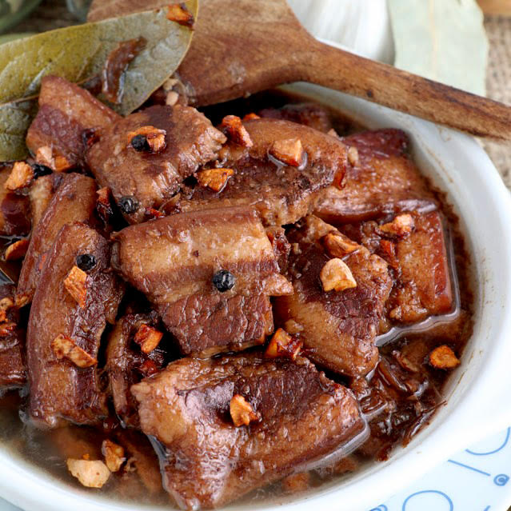

Lola Mameng's
Home
Recipe
Contact
Log In

Ingredients
2 lbs pork belly
2 tablespoons garlic minced or crushed
5 pieces dried bay leaves
4 tablespoons vinegar
1/2 cup soy sauce
1 tablespoon peppercorn
2 cups water
Salt to taste
You might also like
Ginisang Munggo
Pork Adobo
Recipes
Pork Adobo
timer
1 hour 10 minutes
bolt
1120 kcal
Basic Filipino Prok Adobo with Soy Sauce, Vinegar, and Garlic. This dish is perfect when served over newly cooked white rice.
Nutrition Facts
Calories
1211kcal
Carbs
5g
Protein
24g
Fat
120g
Fiber
1g
Calcuim
50g
Sodium
1700mg
Cholesterol
163mg
Instructions
Combine the pork belly, soy sauce, and garlic then marinade for at least 1 hour
Heat the pot and put-in the marinated pork belly then cook for a few minutes
Pour remaining marinade including garlic.
Add water, whole pepper corn, and dried bay leaves then bring to a boil. Simmer for 40 minutes to 1 hour
Put-in the vinegar and simmer for 12 to 15 minutes
Add salt to taste
Serve hot. Share and enjoy!
Share this recipe!